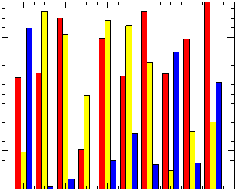
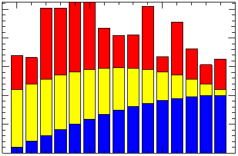
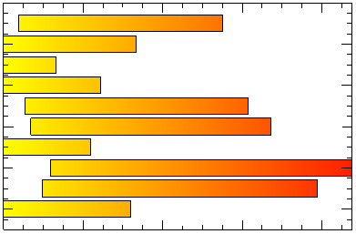

The BARPLOT function plots data as a series of rectangular bars.

The following lines create the plot shown at the top of this topic.
nBars = 3
index = 0
colors = ['red','yellow','blue']
data = RANDOMU(s,10,nBars)
FOR i=0,nBars-1 DO $
b = BARPLOT(data[*,i], NBARS=nBars, INDEX=index++, $
FILL_COLOR=colors[i], /OVERPLOT)
See Plot Examples for additional examples using the BARPLOT function.
graphic = BARPLOT(Values )
graphic = BARPLOT(Locations, Values)
The BARPLOT function returns a reference to the created graphic. Use the returned reference to manipulate the graphic after creation by changing properties or calling methods.
A vector representing the abscissa values to be plotted. If Locations is not specified, Values is plotted as a function of point number (starting at zero). If both arguments are provided, Values is plotted as a function of Locations. If HORIZONTAL is set, these values will be located on the Y axis. If HORIZONTAL is not set (the default), these values will be located on the X axis.
The ordinate data to be plotted. If HORIZONTAL is set, these values will be positioned along the X axis. If HORIZONTAL is not set (the default), these values will be positioned along the Y axis.
Properties marked as (Init) are applied only during the initial creation of the graphic. All other properties can be set during creation, or retrieved or changed after creation.
By default anti-aliasing is used when drawing lines. Set this property to 0 to disable anti-aliasing.
A floating point value indicating the ratio of the Y dimension to the X dimension in data units. If this property is set to a nonzero value, the aspect ratio will be preserved as the graphic is stretched or shrunk. The default value is 0 for all graphics except images, meaning that the aspect ratio is not fixed, but is allowed to change as the graphic is stretched or shrunk.
Set this property to one of the following values:
You can set the following properties on the axes:
|
Property |
Description |
|
[XYZ]COLOR |
A string or RGB vector containing the axis color. |
|
[XYZ]GRIDSTYLE |
A string or integer giving the linestyle for tickmarks. |
|
[XYZ]LOG |
Set to 1 if the axis is logarithmic. |
|
[XYZ]MAJOR |
The number of major tick marks. Set to -1 to auto-compute, set to 0 to suppress. |
|
[XYZ]MINOR |
The number of minor tick marks. Set to -1 to auto-compute, set to 0 to suppress. |
|
[XYZ]SHOWTEXT |
Set to 1 to show text labels or 0 to hide the text labels. |
|
[XYZ]STYLE |
The axis range style. The valid values are: (0) "Nice" range. Default for all graphics except Image, Barplot, and Map. (1) Force the exact data range. Default for Image, Barplot, and Map. (2) Pad the axes slightly beyond the "nice" range. (3) Pad the axes slightly beyond the exact data range. Note - The [XYZ]RANGE takes precedence over this property. |
|
[XYZ]SUBTICKLEN |
The ratio of the minor tick length to the major tick length. The default is 0.5. |
|
[XYZ]TEXT_COLOR |
A string or RGB vector containing the axis text color. |
|
[XYZ]TEXTPOS |
Set to 1 to position text above the axis. The default is 0, below the axis. |
|
[XYZ]THICK |
Set to a floating-point value between 0 and 10 to specify the line thickness for tickmarks. A thickness of 0 gives a thin hairline. The default is 1. |
|
[XYZ]TICKDIR |
Set to 1 to draw the tickmarks facing outwards. The default is 0, facing inwards. |
|
[XYZ]TICKFONT_NAME |
A string containing the font name for the axis text. |
|
[XYZ]TICKFONT_SIZE |
The axis text size in points. |
|
[XYZ]TICKFONT_STYLE |
A string or integer containing the font style: "normal" (0), "bold" (1), "italic" (2), or "bold italic" (3). |
|
[XYZ]TICKFORMAT |
A string or string array of tick label formats. |
|
[XYZ]TICKINTERVAL |
The interval between major tick marks. |
|
[XYZ]TICKLAYOUT |
Set to 1 to suppress tick marks; set to 2 to draw a box around the tick labels. |
|
[XYZ]TICKLEN |
The normalized length of each major tick mark. Tick lengths < 0.25 are in arbitrary units that do not scale with the graphic. Larger tick lengths are normalized relative to the width of the graphic. The default is 0.05. |
|
[XYZ]TICKNAME |
A string array containing the tick labels. |
|
[XYZ]TICKUNITS |
A string giving the tick units. Valid values are "" (the default), "Years", "Months", "Days", "Hours", "Minutes", "Seconds", or "Time". If any of the time units are utilized, then the tick values are interpreted as Julian date/time values. If more than one unit is provided, the axis will be drawn with multiple levels. |
|
[XYZ]TICKVALUES |
An array of tick mark locations. |
|
[XYZ]TITLE |
A string giving the axis title. |
|
[XYZ]TRANSPARENCY |
An integer from 0-100 giving the percent transparency. |
For more detailed explanations of these properties, see the AXIS function.
Tip: You can also use the AXIS function to insert additional axes after the graphic has been created.
The graphic's background color. The default value is [255, 255, 255] (white).
If set, the bars will be shaded between BOTTOM_COLOR and FILL_COLOR. Set BOTTOM_COLOR to -1 to disable shading.
Defines the lower limit of the bars. If BOTTOM_VALUES is a vector it should have the same number of elements as VALUES. If BOTTOM_VALUES is a scalar then the same value will be used for each bar.
Set this property to 1 to direct the graphics to an off-screen buffer instead of creating a window.
Set C_RANGE to a two element vector, [low, high], denoting the low and high values between which BOTTOM_COLOR and FILL_COLOR should be shaded. Any portions of a bar that exists above the high value or below the low value will be colored FILL_COLOR or BOTTOM_COLOR, respectively. If set to a scalar, each bar will be shaded from BOTTOM_COLOR to FILL_COLOR regardless of bar length.
The color of the outline around each bar.
Use this property to retrieve a reference to the Crosshair graphic. All graphics objects within the same set of axes share a single Crosshair graphic. For Plot graphics the default behavior is to display the crosshair when the plot is selected. For other graphics the crosshair is disabled. The STYLE property may be used to control the automatic crosshair display, while the LOCATION property is used to manually draw a crosshair.
You can get and set the following properties on the retrieved crosshair:
|
Property |
Description |
| ANTIALIAS |
Set to 1 to enable anti-aliasing for the lines. |
| COLOR | A string or RGB vector containing the color. |
| HIDE |
Set to 1 to hide the crosshair, 0 to show. |
| INTERPOLATE |
Set to 1 to force interpolation between Plot data points when SNAP is active. For other graphics this property is ignored. The default is 0. |
| LINESTYLE |
An integer or string giving the line style. The default is 'dot'. |
| LOCATION |
The location at which to draw the crosshair. For Plot graphics, if SNAP is enabled, then only the X coordinate needs to be supplied. Otherwise, LOCATION should be set to a two-element vector [X, Y] for two-dimensional graphics or [X, Y, Z] for three-dimensional graphics. If STYLE is currently "None", then setting the LOCATION will automatically set the STYLE to "Manual". |
| NAME |
The name of the graphic. |
| SNAP |
Set to 1 to snap the crosshair to the nearest Plot data point. For other graphics this property is ignored. The default is 1. |
| STYLE | An integer or string giving the crosshair style. Possible values are: 0 - "None" - never draw the crosshair. This is the default. 1 - "Manual" - draw the crosshair using the LOCATION property. 2 - "Auto" - automatically draw the crosshair. This is the default for plots. |
| THICK |
The thickness of the lines. The default is 1. |
| TRANSPARENCY |
The percent transparency of the lines. The default is 50. |
| UVALUE |
An IDL variable of any data type. |
For example, use the CROSSHAIR property to draw a crosshair on an image:
im = IMAGE(/TEST, TRANSPARENCY=50, AXIS_STYLE=2)
c = im.CROSSHAIR
c.COLOR = 'red'
c.THICK = 2
c.LOCATION = [300, 200]
See Creating Mouse Event Functions for a more detailed crosshair example.
Set this property to create the graphic in the current window. If no window exists, a new window is created.
Set this property if values are specified in device coordinates (pixels) for the MARGIN and POSITION propertys. (Normalized coordinates are the default for these propertys.)
Set this property to a two-element vector of the form [width, height] to specify the window dimensions in pixels. If you do not specify a value for DIMENSIONS, IDL by default uses the values of the IDL_GR_WIN_HEIGHT and IDL_GR_WIN_WIDTH preferences for Windows platforms or the IDL_GR_X_HEIGHT and IDL_GR_X_WIDTH preferences for X Windows systems on UNIX.
The plot bar color.
Set this property equal to the text color for the title and axes (if present). The default value is "black".
Set this property equal to a string specifying the IDL or system font for the title and axes (if present). The default value is “Helvetica”.
Set this property equal to an integer specifying the font size for the title and axes (if present). The default value is 16 points.
Set this property equal to an integer or a string specifying the font style for the title and axes (if present). Allowed values are:
|
Integer |
String |
Resulting Style |
|
0 |
"Normal" or "rm" |
Default (roman) |
|
1 |
"Bold" or "bf" |
Bold |
|
2 |
"Italic" or "it" |
Italic |
|
3 |
"Bold italic" or "bi" |
Bold italic |
Set this property to 1 to hide the graphic. Set HIDE to 0 to show the graphic.
If set, the bars will be drawn horizontally (parallel to the X axis). The default behavior is to draw vertical bars (parallel to the Y axis). This is on a per bar plot basis; setting this keyword on a given bar plot will not affect any currently existing bar plots.
If side-by-side bars are being created, INDEX specifies which bar, out of NBARS, that the current bar plot occupies. This value is zero-based and begins on the left. This value is used on a per bar plot basis and should be used in conjunction with NBARS. The default value is 0.
Set this property to a three-element vector [ncol, nrow, index] that arranges graphics in a grid. The first dimension ncol is the number of columns in the grid, nrow is the number of rows, and index is the grid position at which to place the graphic (starting at element 1). This property is ignored if either OVERPLOT or POSITION is specified.
The line style used to draw the outline around each bar. The default value is a solid line.
Set this property to a two-element vector [X offset, Y offset] giving the window's screen offset in pixels.
Set this property to the current graphic’s margin values in the layout specified by the LAYOUT property. Use a scalar value to set the same margin on all sides, or use a four-element vector [left, bottom, right, top] to specify different margins on each side.
By default, margin values are expressed in normalized units ranging from 0.0 to 0.5. If the DEVICE property is set, the values are given in device units (pixels).
This property is ignored if either OVERPLOT or POSITION is specified.
A string that specifies the name of the graphic. The name can be used to retrieve the graphic using the brackets array notation. If NAME is not set then a default name is chosen based on the graphic type.
If side-by-side bars are being created, NBARS specifies the number of bars that exists per LOCATION. This value is used on a per bar plot basis and should be used in conjunction with INDEX. The default behavior is one bar per LOCATION.
Set this property to 1 to create the graphic, but without any data attached to it. The axes and title (if present) are also created and displayed.
Note: You must still provide valid input arguments. The data range of the input arguments are used to automatically set the range of the axes. The [XYZ]RANGE properties may be used to override these default ranges.
If set (the default behavior), an outline will be displayed around each bar. If set to zero, no outline will be displayed around each bar.
Set this property to 1 (one) to place the graphic on top of the existing graphic in the current window. If no current window exists, a new window is created.
Set this property to an existing IDL Graphic reference to direct the new graphic to the window specified by the provided IDL Graphic reference.
Set this property to a four-element vector that determines the location of the visualization within the graphic window. The coordinates x0, y0 represent the lower left and x1, y1 represent the upper right corners of the data space. Coordinates are expressed in normalized units ranging from 0.0 to 1.0. If the DEVICE property is set, the units are given in device units (pixels).
Note: When using POSITION, factor in enough space to display the title and axis labels. For example, if you use POSITION to place your visualization at 0 on the X or Y axis, any labels for that axis will not be visible.
The thickness of the outline around each bar. A value between 0 and 10 that specifies the line thickness. A thickness of 0 displays a thin hairline on the chosen device. The default value is 1.
Set this property to a string specifying a title. The title properties may be modified using FONT_COLOR, FONT_NAME, FONT_SIZE, and FONT_STYLE. After creation the TITLE property may be used to retrieve a reference to the title text object, and the TEXTproperties may be used to modify the title object.
You can also add Greek letters and mathematical symbols using a TeX-like syntax. These symbols need to be enclosed within a pair of "$" characters. See Adding Mathematical Symbols and Greek Letters to the Text String for details on the available symbols.
The percent transparency of the bars, which can be an integer between 0 and 100. The default value is 0.
Set this property to an IDL variable of any data type.
The width of every bar, represented as a scalar value. This value ranges from 0 to 1. The default value is 0.8.
This property retrieves a reference to the WINDOW object which contains the graphic.
Set this property to the title of the IDL Graphic window. The title is displayed in the window's title bar.
A two-element vector giving the X data range to plot. The default behavior is to plot the entire data range.
A two-element vector giving the Y data range to plot. The default behavior is to plot the entire data range.

data1 = SIN((FINDGEN(15)+1)/15*!PI/2)
data2 = data1+COS((FINDGEN(15)+0)/15*!PI/2)
data3 = data2+0.25+RANDOMU(s,15)
b1 = BARPLOT(data1)
b2 = BARPLOT(data2, BOTTOM_VALUES=data1, $
FILL_COLOR='yellow', /OVERPLOT)
b3 = BARPLOT(data3, BOTTOM_VALUES=data2, $
FILL_COLOR='red', /OVERPLOT)

data = (RANDOMU(s,10)+0.1) < 1
bottom = (data/4-0.1) > 0
b = BARPLOT(data, BOTTOM_VALUES=bottom, FILL_COLOR='red', $
BOTTOM_COLOR='yellow', C_RANGE=[0,1], /HORIZONTAL)
| 8.0 | Introduced |
| 8.1 |
Added the following properties: CROSSHAIR, UVALUE, WINDOW, [XYZ]SHOWTEXT, [XYZ]STYLE The THICK property was changed to accept a value between 0 and 10. Added the following methods: Delete, GetData, GetValueAtLocation, SetData. |
PLOT, ERRORPLOT, Using IDL Graphics
BARPLOT BARPLOT BARPLOT BARPLOT BARPLOT BARPLOT BARPLOT BARPLOT BARPLOT BARPLOT BARPLOT BARPLOT BARPLOT BARPLOT BARPLOT BARPLOT BARPLOT BARPLOT BARPLOT BARPLOT BARPLOT BARPLOT BARPLOT BARPLOT